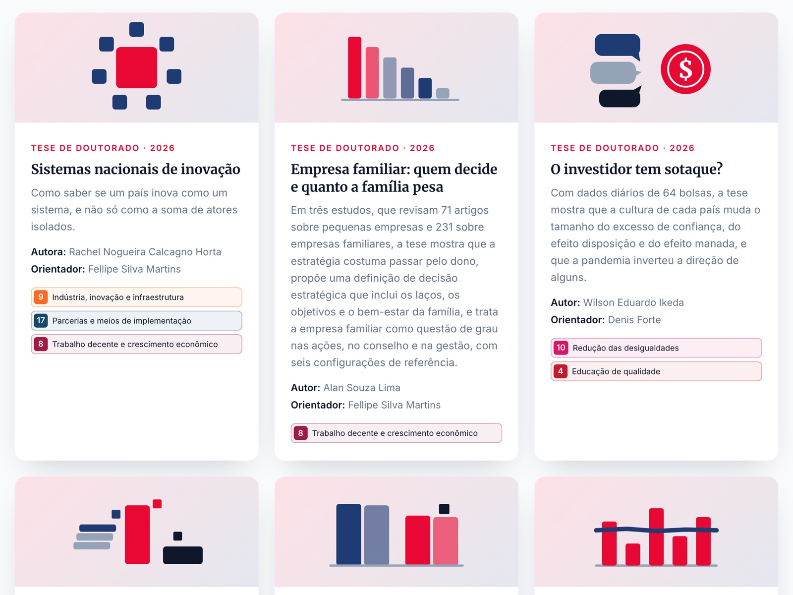

Acesse
Explore as pesquisas no PPGA Interativo
O projeto
Uma tese leva anos para ser feita e costuma ser lida por poucas pessoas, quase todas da própria academia. O PPGA Interativo muda isso: cada tese ou dissertação do Programa de Pós-Graduação em Administração de Empresas vira uma apresentação curta e visual, em linguagem simples, com infográficos que o leitor explora de forma interativa.
O público são gestores, empresas, órgãos públicos, estudantes, imprensa e a sociedade em geral. As apresentações também servem como estudos de caso em sala de aula, na graduação e no MBA: cada uma traz um problema real, os dados e o que eles significam para as organizações.
O projeto é uma iniciativa do PPGA e da Escola de Negócios da Universidade Presbiteriana Mackenzie, desenvolvida pelo Laboratório de IA + Estratégia. Todo o site tem versão em inglês, e cada trabalho indica os Objetivos de Desenvolvimento Sustentável (ODS) da ONU com que mais se relaciona.

Como o projeto se encaixa no laboratório
O laboratório estuda o que muda nas organizações quando a inteligência artificial passa a participar do trabalho e das decisões. O PPGA Interativo é esse mesmo fenômeno acontecendo dentro da universidade: um processo acadêmico que antes dependia só de pessoas agora é feito em parceria com a IA. Por isso o projeto é, ao mesmo tempo, uma entrega e um caso que o próprio lab observa.
Transformação digital
Como uma instituição adota a IA generativa num processo real e escala o resultado para todo um programa de pós-graduação.
05Comportamento organizacional
A colaboração entre pessoas e IA: o agente faz o trabalho pesado e os pesquisadores decidem, revisam e respondem pelo resultado.
03Inovação
Um formato novo de divulgação científica que só se tornou viável, nessa escala, com a IA generativa.
Entre as ações do laboratório, o projeto reúne três frentes: a divulgação científica (levar a pesquisa além da universidade), o apoio ao ensino (casos prontos para a sala de aula) e o desenvolvimento de ferramentas (um método e um código abertos, que outros programas podem reaproveitar).
Como é feito
Cada apresentação nasce de um fluxo de trabalho escrito e revisado pela equipe, que um agente de IA segue etapa por etapa. Em dois pontos o trabalho para e espera a aprovação de uma pessoa.
- Leitura
O agente lê o texto completo da tese ou dissertação e monta um mapa do trabalho: problema, método, dados e resultados.
- Roteiro
A pesquisa vira uma sequência de telas, cada uma com uma ideia só, em linguagem simples. O roteiro passa pela aprovação do coordenador antes de qualquer construção.
- Visualizações
Para cada resultado, o agente escolhe a forma de mostrar: infográficos em camadas, modelos 3D, comparações e simuladores que o leitor manipula.
- Verificação
Todo número é conferido com o texto original. O que é interpretação da equipe ou cenário ilustrativo aparece identificado como tal na página.
- Versão em inglês
A apresentação aprovada ganha uma tradução completa, com os mesmos gráficos.
- Publicação
O trabalho entra no site com o link para o texto completo no repositório do Mackenzie, que continua sendo a referência para citação.
O projeto começou em 9 de outubro de 2026. A cada trabalho, as lições aprendidas (preferências de linguagem, correções, novos tipos de gráfico) voltam para o fluxo, que fica melhor para o próximo. Em poucas semanas, o site passou a reunir dezenas de teses e dissertações das três linhas de pesquisa do programa. A meta para 2027 é chegar a cerca de 350 teses e dissertações, o que corresponde aproximadamente a tudo o que o programa publicou nos últimos dez anos.
Por ser um processo automatizado, as apresentações podem conter imprecisões; quem encontrar um erro pode falar com a gente.